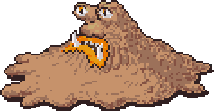

Lançado em 1994 no Japão, EarthBound, ou Mother 2, dá sequência ao primeiro jogo. Esse novo jogo conta a história de Ness que reune alguns amigos para lutar e salvar o mundo do vilão alienígena Giyagas, que também aparece no primeiro jogo como o boss final.
Ojogo apesar de parecer bem incoente, começa a parecer cada vez mais bizarro. Com diversos tipos de inimigos com desing aleatório e combos engraçados.
Big Pile of Puke
